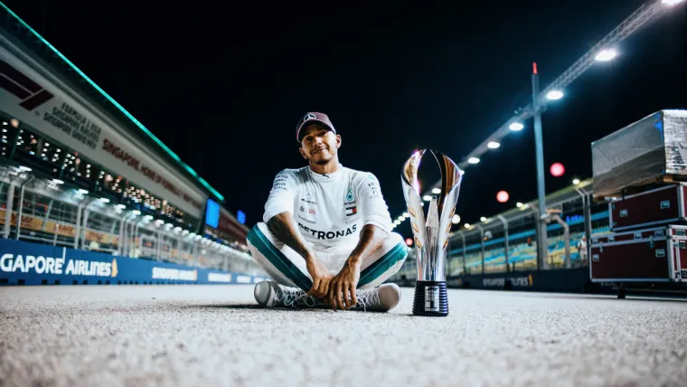
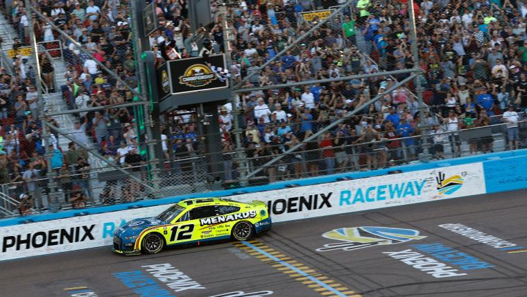
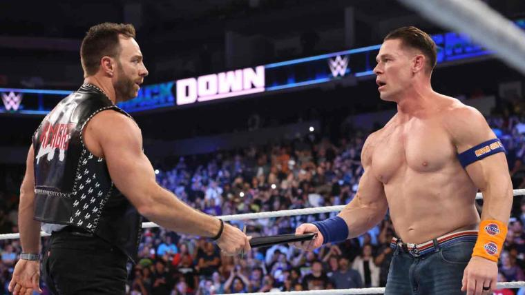

National Dog Show 2023 on Thanksgiving: Start time, TV schedule, live stream & past winners

The National Dog Show returns to television on Thanksgiving Day 2023 to continue its 22-year tradition.
Who is Erin Matson? Meet the 23-year-old UNC field hockey coach who led Tar Heels to NCAA championship

In a list of the greatest athletes of all time, you'll see Erin Matson. At least, you should.The former Tar Heel already secured her place in North Carolina field hockey history as a player, but she's not done. The 23-year-old is in in her first season as Carolina's head coach, just a year after she played her last game with the program, which resulted in a national title. Now, she has another one as a rookie coach.
Lewis Hamilton
Across Formula One history, it's British driver Lewis Hamilton who holds the record for most podiums obtained in the sport with 197 and counting.
World Gymnastics Championships results: Updated scores, winners for women's events at 2023 meet

The United States took home the gold in the women's team final for the second straight year. It finished first in qualifying with a score over five points more than the second-place finisher. Great Britain and China will bring the pressure with hit routines.
Mr. Olympia, the competition's most well-known event, will be crowned Saturday, while Ms. Olympia will be crowned the night before, on Friday.

Mr. Olympia, the competition's most well-known event, will be crowned Saturday, while Ms. Olympia will be crowned the night before, on Friday.
Nebraska outdoor volleyball match: TV schedule, live streams & more to watch game at Memorial Stadium

Nebraska volleyball will make history Wednesday when nearly 90,000 fans pack Memorial Stadium to watch NCAA volleyball's first outdoor match. The Huskers will take the stage against the Omaha Mavericks for Volleyball Day in Nebraska. Division II teams Nebraska-Kearny and Wayne State will play an exhibition match prior to the main event.
World Championships results 2023: Updated winners for every track & field event at Budapest 23

The Jamaican superstar is one of the greatest sprinters in track history. Her closet is canary — she's got three Olympic gold medals, as well as 10 World Championships titles in her collection
Triton Poker London 2023 LIVE stream: $60,000 Short Deck Main Event Ante-Only
.jpg)
Triton Poker's Super High Roller Series returns for the first leg of season three at JW Marriot Grosvenor House in London, England.
Davis Cup 2023 teams: Every player from the eight nations competing

Eight nations will meet in Malaga, Spain to decide who is the 2023 Davis Cup champion. Some of the world's best players including Novak Djokovic, Jannik Sinner and Felix Auger-Aliassime will spearhead their countries.
Who won the NASCAR championship in 2023? Full results, highlights from the Cup Series title race at Phoenix
Ryan Blaney needed a miracle to hoist the Cup Series crown. The Team Penske hotshot seemed a world away from a title just a few months ago; such is the case when your winless run stretches to 59 races.But in the Valley of the Sun, sorcery takes place. And under the gleam of the spotlight, Blaney proved himself to be more machine than man, bursting beyond his opposition to pick up his first-ever Cup Series Championship.
What time is WWE Fastlane 2023 today? PPV schedule, main card start time for wrestling event
The biggest star from WWE's past, John Cena, teams up with the hottest act in WWE today in LA Knight. They face The Bloodline’s Jimmy Uso and Solo Sikoa. Cena involved himself in The Bloodline’s business, so the group attacked every Cena ally heading into Fastlane. The only member of WWE’s roster they forgot about was Knight, whom Cena interacted with when he reffed his match against The Miz.